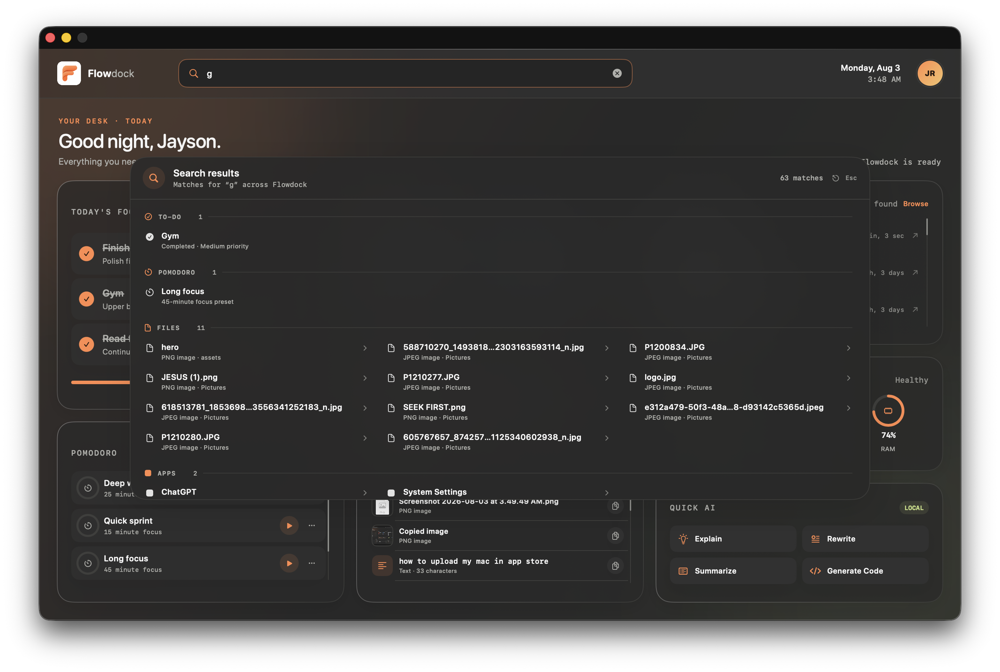
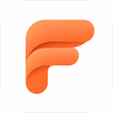
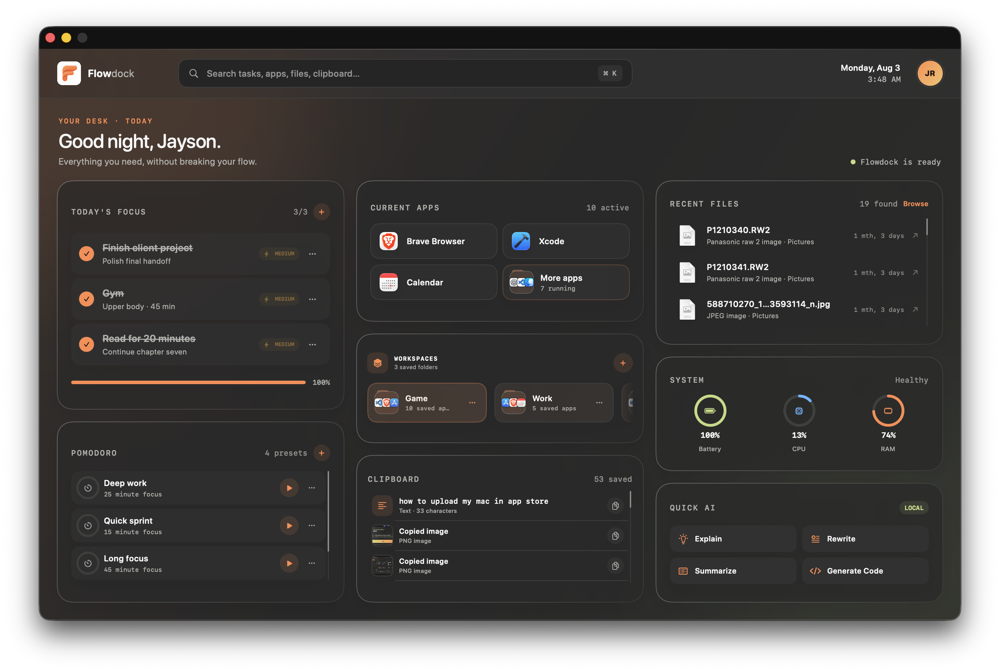
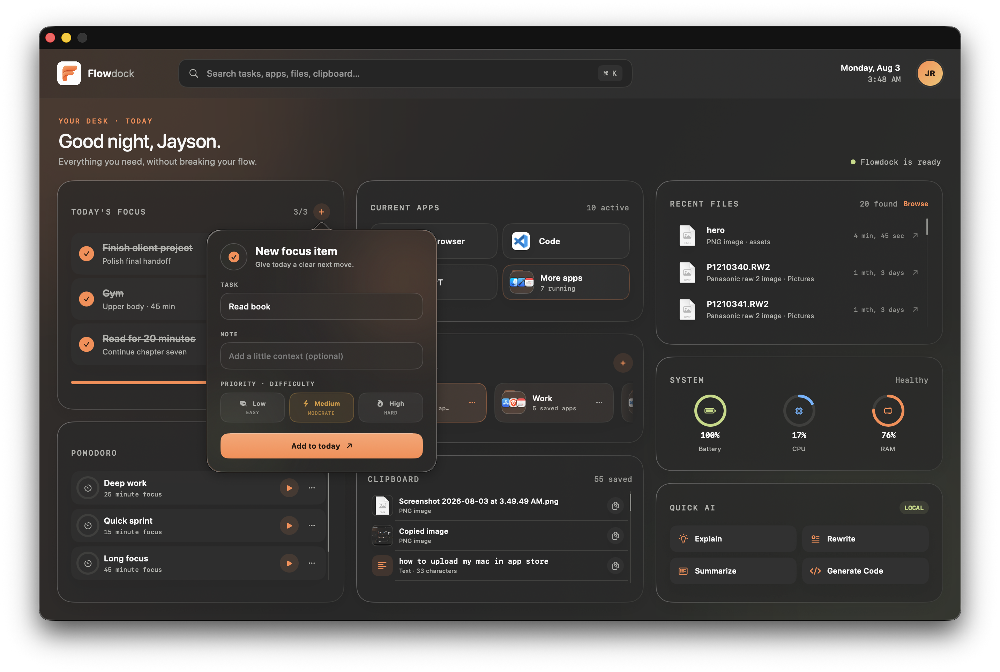
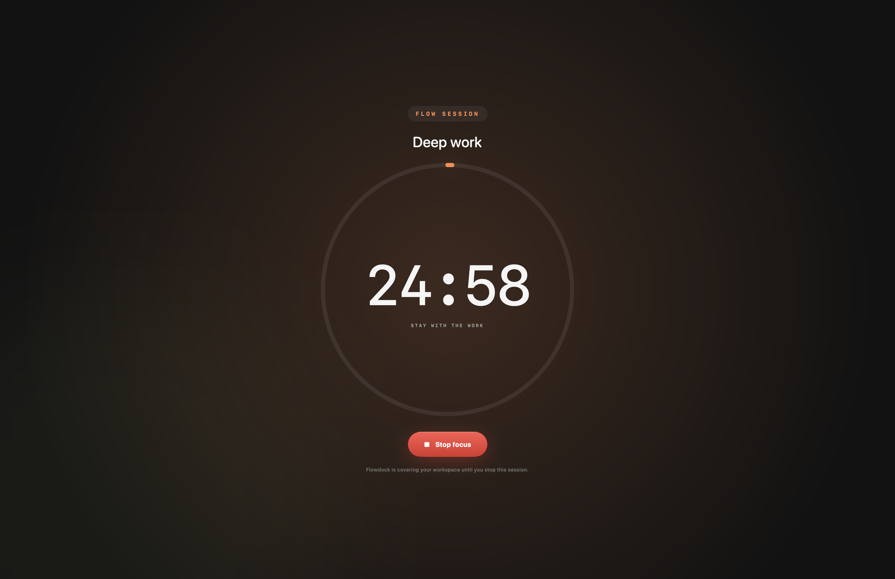
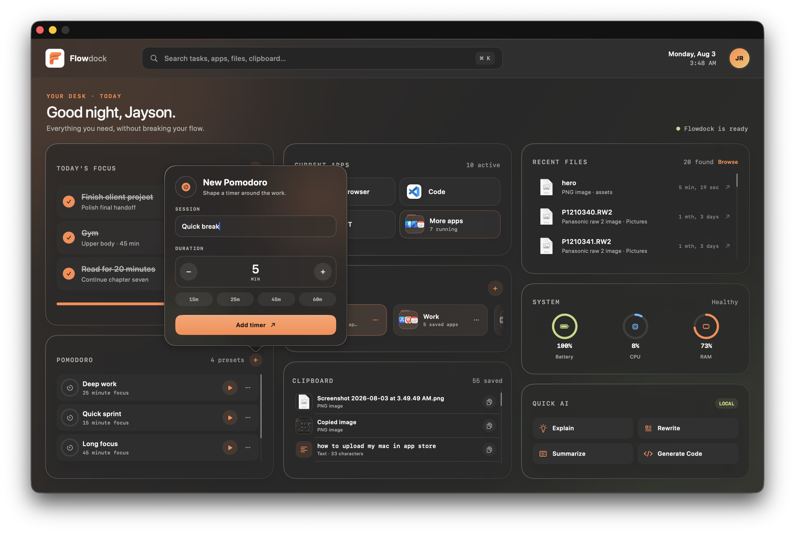
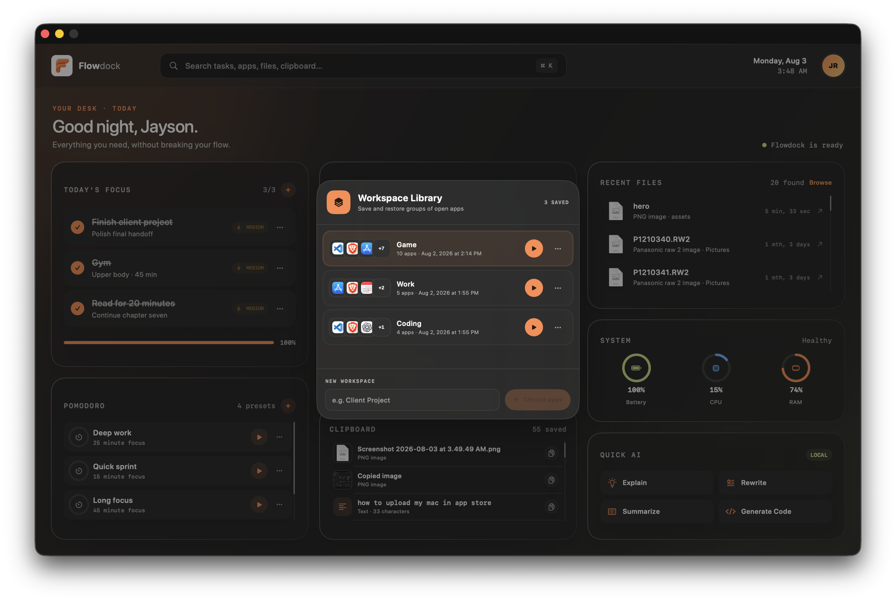
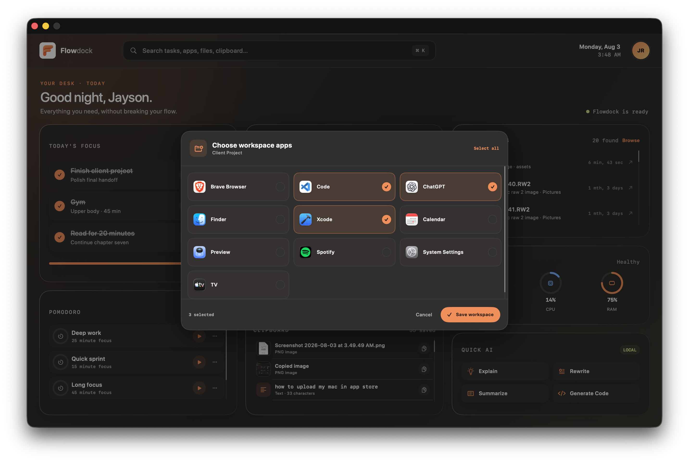

01 Universal search
One shortcut.
Every result.
Search tasks, timers, files, and open apps in one pass. The result you need is ready before context switching gets a chance.


FlowdockThe command center for your workday
Flowdock brings your focus, apps, clipboard, files, and quick AI actions into one calm macOS workspace—so you can spend less time switching and more time moving.

One place. Fewer detours.
Flowdock is being built for people who want their computer to feel like a workspace again—not a maze of tabs, launchers, and disconnected utilities.
Inside Flowdock Four ways to stay moving
The small utilities you reach for all day, composed into one deliberate workspace. Everything stays close without competing for your attention.
01 Universal search
Search tasks, timers, files, and open apps in one pass. The result you need is ready before context switching gets a chance.

02 Today’s focus
Keep a short, honest list with just enough context and priority to make starting feel obvious.

03 Flow sessions
Shape a timer around the work, then let Flowdock cover the workspace until the session is done.


04 Workspaces
Save the exact group of apps a project needs. Launch the whole setup together, whether you’re coding, planning, or winding down.
One click restores your working set


One calm surface for the work behind your work.
Get early access